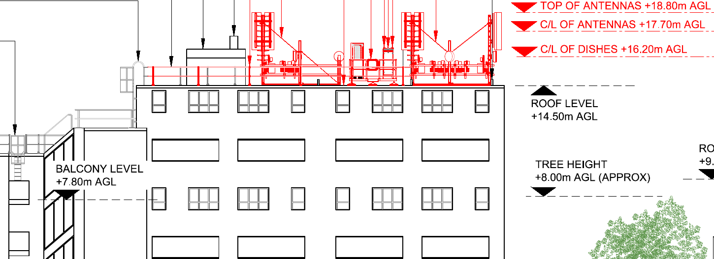
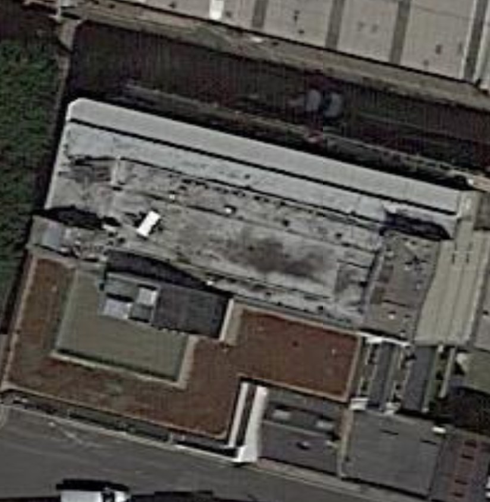
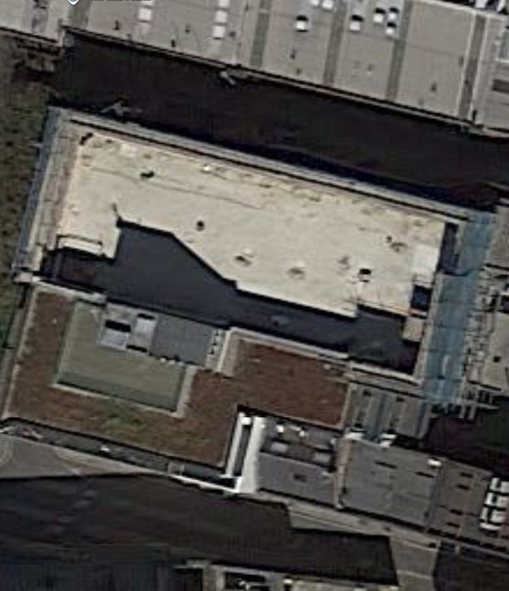

What it would look like, and who would see it
An industrial installation above the rooftops, in view across the conservation area.
What it would look like, and who would see it
An industrial installation above the rooftops, in view across the conservation area.
What they want to build
- Two steel antenna frames, with antennas, radio units and dishes
- A steel platform of equipment cabinets
- New railings around the roof edge, and a caged ladder up the outside of the building
- Antennas reaching around 19 metres, well above the rooftops around them
Where it would sit
In the heart of the Barnsbury Conservation Area, among many listed and locally listed houses, and in direct view of Barnsbury Square: its gardens, its terraces and its unique heritage atmosphere.
It would be seen from Barnsbury Square, Mountfort Terrace, Lofting Road, Brayfield Terrace and Thornhill Road: from some places all year round, from others when the trees are bare.


- Barnes Court
- Proposed antenna frames
- Listed building, Grade II (Historic England)
- Locally listed building (Islington Council)
- 1Viewpoint; the shaded wedge shows the direction of view
What's wrong with this "consultation"
A notice of a decision already made, with figures that don't add up.
What's wrong with this "consultation"
A notice of a decision already made, with figures that don't add up.
They don't appear to be consulting at all, or to have any regard for, or awareness of, the unique character of the Barnsbury Conservation Area.
A notice, not a consultation
- Telent says in writing this is "not a formal consultation process".
- A resident was told by phone that the decision to apply had already been made. Telent has not disputed this.
- One letter, 14 days to reply, and no drawings until a resident asked for them.
- Telent was asked to send the full details to every Barnes Court resident. As far as we know, it hasn't.
Their reason doesn't stand up
"EE and 3 (H3G) currently have a radio base station located at 9-17 St Albans Place."Letter to residents, 27 October. Repeated by email, 13 November.
"The St Albans Place infrastructure… has since been decommissioned."Email from Telent, 24 November. No date given.


Between June 2019 and 2020 the roof was stripped back and resurfaced, and the aerial imagery shows no sign of a base station on it afterwards. If that is when the site went, Telent's letter of 27 October described as current a base station that had been gone for around six years. Telent has not said when it was decommissioned.
And if the area has managed without that site since around 2020, the claim that Barnes Court is an urgent replacement needs evidence. None has been given.
The figures don't add up
- The letter describes 6 antennas. Their drawings show 4.
- The heights they quote by email don't match their own drawings.
What they left out
- That Barnes Court is in a conservation area. It isn't mentioned anywhere in their letter, emails or drawings.
- The views from Barnsbury Square. Their only elevation is drawn from the Lofting Road side, and ignores the direct sightlines from the square and its listed houses.
- The new railings and the caged ladder up the outside of the building.
- Whether it is 4G or 5G.
- What it means for the building: maintenance, access and the power supply.
- Whether Islington, as freeholder, has agreed anything.
No evidence of a real search
Telent has described its search for other sites three different ways: 30 sites, "a number of alternative sites", and "several attempts with other sites". It has still produced no evidence that any other site was actually investigated. The old site was about 680 metres away, and there are taller buildings much closer to it.
A Barnes Court resident put it to Telent in writing that this was being dumped on council tenants. None of Telent's replies has responded to that point.
What we still don't know
Basic questions that Telent hasn't answered.
What we still don't know
Basic questions that Telent hasn't answered.
The old site
- When it was switched off, and what has served the area since
- Whether Barnes Court is a like-for-like replacement
Why here
- Which other sites were considered, and why each was rejected
- Why a site so far from the old one
- Whether Islington, as freeholder, has been approached or has agreed anything
Living under it
- How much noise it will make, day and night
- Where the power comes from, and whether the building's supply can take it
- Whether the roof can carry it
- How it will be installed and maintained, how often engineers will need access, and who answers for damage and disruption
The equipment
- Exactly how many antennas, and how high
- Whether it is 4G, 5G or both
How the decision gets made
Islington decides, twice. Here's how, and when you can have your say.
How the decision gets made
Islington decides, twice. Here's how, and when you can have your say.
Two possible routes
The fast route. Telent calls the scheme "permitted development". On that route the council can only consider siting and appearance, not whether the mast should be built at all, and it has 56 days to decide.
Full planning permission. Anything outside the permitted development rules, which are tighter in conservation areas, needs a full planning application, assessed like any other. This is what we are asking for.
Islington's two roles
Islington Council is the planning authority that decides the application. It is also the freeholder of Barnes Court, the landlord any operator must deal with for the roof.
What counts in planning
- How it looks, and its effect on the conservation area and on the setting of listed buildings
- Its effect on neighbours: outlook, noise and disturbance
- Whether better sites were properly looked for
Health. National planning rules treat compliance with international exposure guidelines as settling health questions, so health is very unlikely to be accepted as a reason to refuse. That's why objections should focus on appearance and heritage. It doesn't stop residents asking whether they'd want to sleep under it.
When you can have your say
No planning application has been lodged with Islington Council yet. When one is, the council will invite comments, and the window can be short. We'll post the reference and how to object on this page.